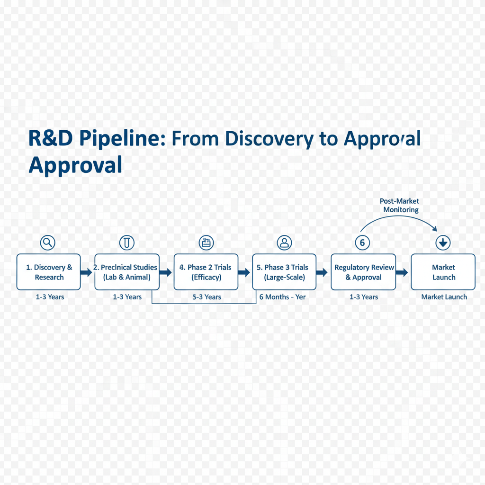

Our R&D Pipeline: From Concept to Cure

Development Stages (Unordered List)
- **Discovery & Preclinical:** Identifying drug targets and initial safety studies.
- **Phase I Clinical Trials:** Testing safety on small groups of healthy volunteers.
- **Phase II Clinical Trials:** Testing efficacy and side effects on small patient populations.
- **Phase III Clinical Trials:** Large-scale efficacy and safety monitoring on diverse patients.
- **Regulatory Review & Approval:** Submission and review by global health agencies.
View Pipeline Flowchart
A visual representation of our development process:
